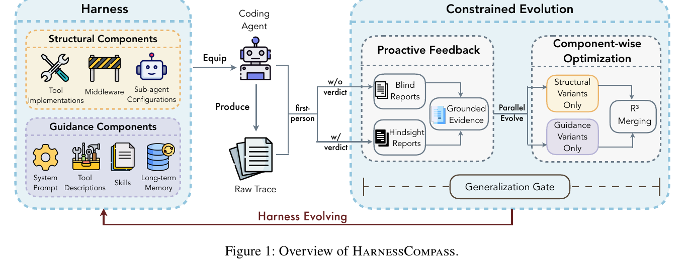
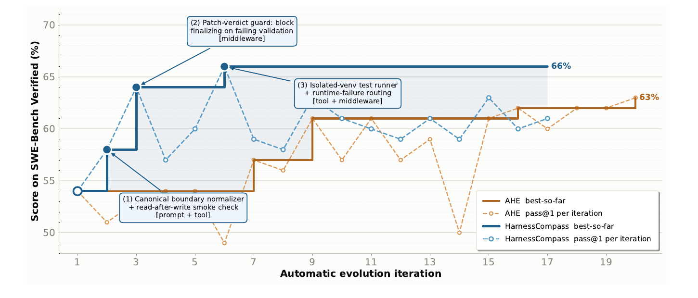

HarnessCompass: Disciplined Harness Evolution — Gate, Ask the Agent, Merge the Branches
TL;DR
- "HarnessCompass: Guiding Automatic Harness Evolution toward Generalizable and Effective Agent Harnesses" (arXiv 2608.01918; Luan Zhang, Ruochen Zhou, Dandan Song, et al. — Beijing Institute of Technology & City University of Hong Kong) diagnoses three failure modes of automatic harness evolution — search-task overfitting, trajectory-only evidence, and cross-component interference — and adds one mechanism per failure: a generalization gate, proactive first-person agent feedback, and component-wise optimization with a three-stage merge (R³).
- The loop keeps the base model (GPT-5.4, non-thinking) frozen and evolves the harness from a deliberately minimal seed (one shell tool + short system prompt). On SWE-bench Verified it lifts Pass@1 from 54.0% → 66.0% on the 50-task evolution set in 5 iterations (the prior SOTA, AHE, needs ~20 to reach 63.0%), and — the part that matters — from 51.6% → 60.4% on the 450 held-out tasks, versus AHE's 54.7%.
- The evolved harness transfers across models: frozen and re-evaluated on Claude-Sonnet-4.6 with no further evolution, it improves total Pass@1 from 70.0% → 73.8% — evidence it learned reusable engineering principles, not GPT-5.4-specific or task-specific fixes.
Why this matters
The harness-evolution thread is the busiest one in this tracker, and it has hit a specific wall: evolved harnesses don't transfer. The "No Universally Best Harness for Automated Discovery" result showed harness rankings flip across tasks; recent evaluation studies (cited in this paper) report that harnesses evolved against a fixed task set generalize poorly once evaluation is disjoint; and the "Model or Harness" failure-mode taxonomy showed how easily blame is misassigned between agent and scaffold. Meta-agents given free rein over the whole harness against a fixed verifier do what any optimizer does: they memorize the test.
HarnessCompass is the first paper in this line (that we've tracked) to treat the discipline of the evolution process as the contribution, rather than the search itself. Its three principles map one-to-one onto the three documented pathologies: if edits can encode task identifiers, they will → forbid that class of edit globally. If the only signal is the trajectory, harness friction gets misread as agent error → ask the agent itself where it struggled, before it knows whether it passed, then audit the claims against the trace. If prompts, tools, middleware, and memory are revised in one pass, edits interfere → evolve structure and guidance on separate tracks and merge deliberately. Each mechanism is mundane; the paper's evidence that each one is load-bearing — and that one of them (proactive feedback) actively hurts generalization unless the others contain it — is the real payload.
The core idea
A harness \(\mathcal{H}\) is a set of editable components in seven types, split into structural components (tool implementations, middleware, sub-agent configurations — executable) and guidance components (system prompt, tool descriptions, skills, long-term memory — behavioral). The base model \(M\) is fixed. Running \(M\) with harness \(\mathcal{H}\) on task \(x\) yields a trajectory \(\tau\) with binary verifier outcome \(r(\tau)\in\{0,1\}\); with \(k\) rollouts per task over task set \(\mathcal{D}\), performance is the task-level average
(reconstructed from the paper's Pass@1 definition — mean binary success over \(k\) rollouts, averaged per task). Evolution starts from a minimal seed \(\mathcal{H}_0\) — a single run_shell_command tool and a 12-line system prompt, no middleware, skills, sub-agents, or memory — so every component of a later harness is one the loop itself introduced and measured, not inherited.

Figure 1 from the paper: the harness (structural + guidance components) is evolved through proactive feedback (blind and hindsight reports → grounded evidence) and component-wise optimization (parallel variants → R³ merging), all under a global generalization gate.
The three mechanisms:
① Generalization gate (constrained evolution). Every candidate edit passes a global gate with two requirements. Content: reject any edit that mentions a specific task instance, test function, or private symbol under evaluation, or any code branch triggered by tokens appearing only in particular tasks; admit only reusable decision criteria paired with an applicability condition evaluable on unseen tasks. Placement: capability edits (new executable functionality — running tests, installing packages) must live in middleware/tools/sub-agents as code; guidance edits (behavioral instructions) must live in the system prompt or memory, never encoded as executable logic — because guidance-as-code has no reliable execution condition and reintroduces exactly the task-specific triggering the gate exists to kill.
② Proactive feedback. After the verifier scores a round, each failed task's own agent is queried twice: a blind report (verdict withheld — "where did the harness hinder you, what capability did you wish existed?", avoiding hindsight rationalization) and a hindsight report (verdict revealed — attribute the failure to one of harness / agent's own reasoning / task ambiguity / environment, isolating what the harness can actually fix). Reports are then grounded against the trajectory: a complaint about an existing component survives only if the trace shows the difficulty; a requested capability survives only if the trace shows the concrete gap. Surviving reports are deterministically grouped per component with a confidence score (agreement among reports, distinct tasks affected, blind/hindsight consistency) and handed to the meta-agent as evidence alongside — never instead of — trajectory evidence.
③ Component-wise optimization + R³. Each round evolves two harness variants in parallel — one restricted to structural components, one to guidance — evaluates both, and takes the higher-Pass@1 variant as winner \(w\):
(transcribed from Algorithm 1; \(\ell\) is the losing track). R³ then salvages the loser: Revision keeps only loser edits that are independently beneficial and neither duplicate nor conflict with the winner; Recombination applies them onto the winner with winner precedence on file-level conflicts; Refinement removes redundant edits implementing overlapping functionality, keeping the more reliable component. The merged harness is accepted only if it beats the current best: \(\mathrm{Pass@1}(\mathcal{T}^{w})>\mathrm{Pass@1}(\mathcal{T})\).
How it works
# HarnessCompass evolution (Algorithm 1, lightly compressed)
H* <- H_0 # minimal seed: shell tool + short prompt
for t = 1..N:
T <- Rollout(M, H*, D, k) # k rollouts/task on 50 evolution tasks
E <- Distill(T) # trajectory-derived evidence
F <- GroundSelfFeedback(M, T) # proactive feedback:
# blind report (verdict hidden) + hindsight report (verdict shown,
# attribute to harness/reasoning/ambiguity/environment)
# -> keep only trace-supported items -> group + confidence-score
for track c in {structure, guidance}: # component-wise, in parallel
H^c <- GatedEvolve(M, H*, E, F, c) # every edit must pass the
# generalization gate (content + placement)
T^c <- Rollout(M, H^c, D, k)
w <- argmax_c Pass@1(T^c); l <- the other track
H_t <- R3(H^w, H^l) # Revision -> Recombination -> Refinement
if Pass@1(T^w) > Pass@1(T):
H* <- H_t # accept improved harness
return H*
All four roles — code agent, trajectory analyzer, feedback agent, meta-agent — share one base model (GPT-5.4, non-thinking mode), so measured gains are attributable to harness evolution rather than a stronger meta-model, and extended reasoning can't mask harness effects. What the loop actually builds is concrete: the paper's trajectory (Figure 2) shows the first accepted edits are a canonical boundary normalizer + read-after-write smoke check (prompt + tool), a patch-verdict guard that blocks finalizing on failing validation (middleware), and an isolated-venv test runner with runtime-failure routing (tool + middleware).
Results

Figure 2 from the paper: best-so-far and per-iteration Pass@1 on the SWE-bench Verified evolution sample, with the three earliest accepted HarnessCompass edits annotated.
- Main result (SWE-bench Verified; 50-task evolution set, 450 held-out, GPT-5.4): seed \(\mathcal{H}_0\) 54.0% sample / 51.6% held-out / 51.8% total. AHE (prior SOTA, 20 turns): 63.0 / 54.7 / 55.5. HarnessCompass (5 turns): 66.0 / 60.4 / 61.0. The evolution-set gap over AHE is 3.0 points; the held-out gap is 5.7 — the method's edge is mostly generalization, exactly what it was designed for.
- Progressive ablation (adding one principle at a time): gate alone → 62.0 sample / 58.4 held-out in just 2 turns (constraint alone already transfers). +Proactive feedback → 66.0 sample but held-out drops to 55.8 and turns balloon to 12: richer signal finds more improvements and overfits harder without containment. +R³ → held-out recovers to 60.4 at 5 turns while keeping the 66.0 sample. The principles are genuinely complementary — feedback without the merge discipline is net-negative for transfer.
- Cross-model transfer: the GPT-5.4-evolved harness, frozen, on Claude-Sonnet-4.6: 68.0 → 76.0 sample, 70.2 → 73.6 held-out, 70.0 → 73.8 total. A harness evolved on one model helps a model it never saw.
- Where gains land: per-repository breakdown shows improvements concentrated where the seed is weakest and tasks are most harness-sensitive — sphinx-doc 35.2% → 58.0%, pytest-dev 52.6% → 68.4%, django (the largest repo, 231 tasks) 59.3% → 70.1% — while scikit-learn (already 73.4% with bash alone) barely moves. Same pattern on Claude-Sonnet-4.6 (astropy 45.5% → 63.6%).
How it connects
- [Harness-R1] is the natural contrast: it trains a 9B engineer with GRPO to patch runtimes, while HarnessCompass prompts a frozen meta-agent but disciplines the loop. Harness-R1's evidence says outcome-grounded training beats prompted editing; HarnessCompass's says disciplined prompting beats undisciplined prompting — the obvious open question is whether a trained engineer behind a generalization gate dominates both.
- [No Universally Best Harness for Automated Discovery] and [Model or Harness: 41 Agent Failure Modes] supply the two pathologies this paper operationalizes against: harness overfitting and misattribution. The blind/hindsight report pair is essentially an automated attribution protocol for the taxonomy's "who failed?" question.
- [Recursive Harness Self-Improvement (Sakana/Berkeley)] and [Harness Handbook] established evolve-the-scaffold loops; HarnessCompass is the first we've tracked to hold transfer to unseen tasks and models as the primary success criterion rather than search-set score.
- [Self-Improving Agents Should Evolve Their Benchmarks] attacks the same overfitting problem from the opposite side — change the tasks, not the edit rules. Gate-constrained edits and evolving benchmarks are complementary defenses.
- The [Frontis-MA1] and [Rehearse] autoresearch line shares the deeper theme: unconstrained self-improvement loops degrade in characteristic ways (task memorization here, judgment decay there), and the fixes are process discipline, not capability.
Critical take
The honest headline is the ablation, not the leaderboard: proactive feedback — the paper's most novel-sounding mechanism — hurts held-out performance (58.4 → 55.8) until R³ contains it, and the generalization gate alone captures most of the transfer gain in 2 turns. That makes the gate the true workhorse, and the gate is implemented as system-prompt instructions to the meta-agent (the appendix shows the actual prompt, hard-ban list and all) — i.e., enforcement is itself LLM-judged, with no adversarial test of whether task-specific knowledge leaks through in disguise ("when one shared producer feeds a wrong value..." criteria can smuggle a lot). Scope is also narrow: one benchmark (SWE-bench Verified, a heavily-studied target with its own contamination worries), one evolution set of 50 tasks, one model pair, non-thinking mode only, and a single-run trajectory with no seeds or variance reported for the headline numbers. The cross-model transfer going up on Claude-Sonnet-4.6 (+3.8 total) is encouraging but is one ordered pair; transfer from a weaker to a stronger model is the easy direction. And the comparison to AHE inherits the usual re-implementation asymmetry. None of this negates the core finding — that where the discipline sits (edit admissibility, evidence grounding, merge protocol) determines whether harness evolution memorizes or generalizes — and the per-repository breakdown (gains concentrated exactly where the seed harness is weakest) is the kind of evidence that suggests real engineering was learned. This paper reads less like a new search algorithm and more like a code-review policy for self-improving systems; that's a compliment.
If you remember three things
- Harness evolution's enemy is memorization, and admissibility rules beat search: a global gate — no task IDs, no test names, no token-triggered branches; capability edits as code, guidance edits as prompt/memory — alone lifts held-out Pass@1 from 51.6% to 58.4% in two iterations.
- Ask the agent, then audit it: blind (pre-verdict) + hindsight (post-verdict, four-way attribution) self-reports, grounded against trajectories, expose harness friction traces can't show — but this signal overfits unless the merge step (R³) filters what survives.
- The result that counts is transfer: 60.4% vs AHE's 54.7% on 450 held-out tasks in a quarter of the iterations, and +3.8 total on a model the harness was never evolved with.